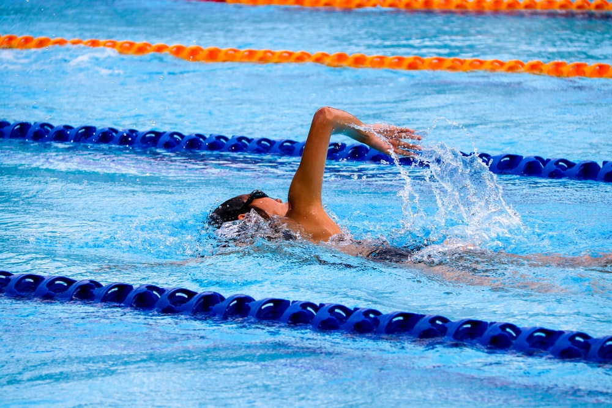

My hobbies



I have been swimming since I was 6 years old, I have been in competitions since i was a kid. I love being outside in the summer, and swimming is such a stress relief to me.
Swiming has lot of benefits and Swimming is well known for being easy on the joints—it’s especially great for someone with a sports injury or lower-back or knee issues. If you still want to work out while injured, swimming can be a great calorie-burning solution.
Myy favourite stroke is breaststroke. In this stroke the arms and legs work in turn, first the arms pull, then the legs kick and the whole body glides forward with arms and legs straight, you push off for the first stroke, he or she stretches out on the water with the thumbs touching the palms facing downwards. I also like butterfly. In butterfly you hold your legs together and kick, you bring your arms forward and push them upwards and dive back down.